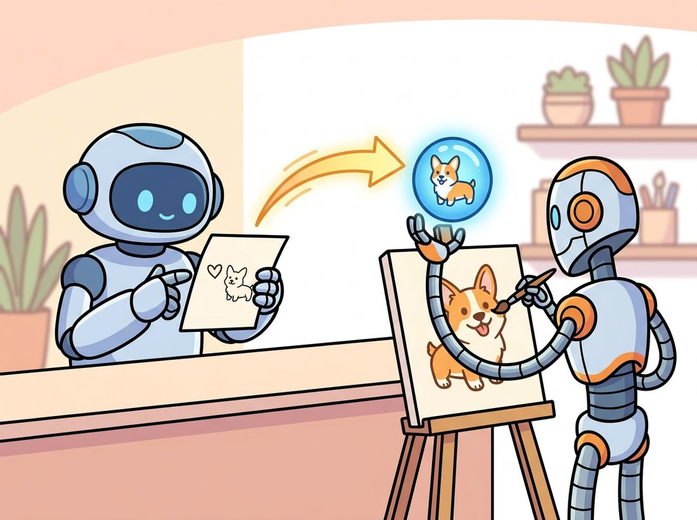
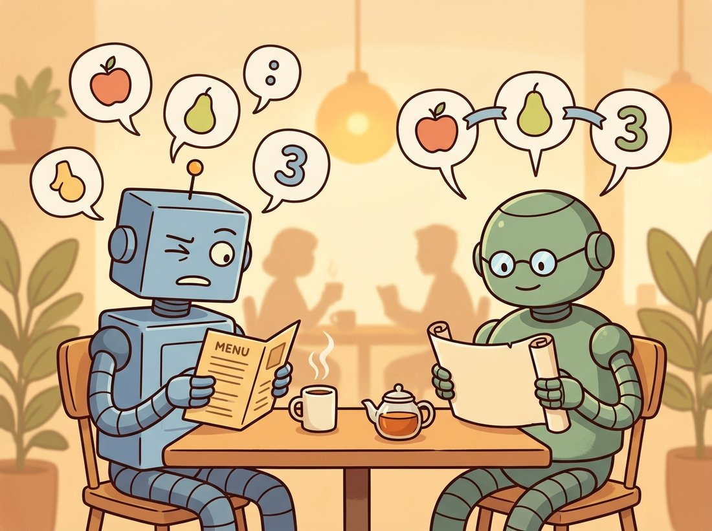

"I spent four hundred million captions learning that a photo of a corgi and the words 'a photo of a corgi' should land in the same place. Now you ask me to draw one. I only ever learned to point; the drawing is someone else's job."
A Contrastive Encoder With Strong Opinions About Corgis
Before a diffusion model can draw what you describe, something must translate your sentence into a vector the model can attend to, and that translator is a frozen text encoder, not the generator. The quality of the translation sets a ceiling on prompt following that no amount of denoising can raise. This section studies the two encoder families that do the translation: CLIP, whose contrastive training put images and captions in one shared space, and the large language-model encoders like T5 that newer systems prefer for long, compositional prompts. Get the encoder right and the same generator suddenly obeys instructions it used to ignore. The illustration below captures the split: the reader and the painter are two different machines.

The guidance section of Chapter 33 left us with a conditional denoiser: a network that, given a noisy latent and some conditioning vector $c$, predicts the noise to remove so the result drifts toward images consistent with $c$. We never said where $c$ comes from. For text-to-image generation, $c$ is the output of a text encoder, a separate, usually frozen network that maps a string of words to a sequence of vectors. This section is about that network. It is the least glamorous component of the stack and the one that most often decides whether a system can count, place objects in the right relationship, or render a phrase faithfully.
1. The Problem: Two Modalities, One Space Beginner
Pixels and words live in incompatible representations. An image is a grid of intensities; a caption is a sequence of discrete symbols. To condition a generator on text, we need a function that takes the caption and produces something a vision network can consume continuously. The breakthrough was to learn a shared embedding space: train an image encoder and a text encoder jointly so that an image and its matching caption map to nearby points, and mismatched pairs map far apart. This is the same idea you met as contrastive self-supervision in Chapter 25, applied across modalities rather than across augmented views of one image.
CLIP (Contrastive Language-Image Pre-training) trained on roughly 400 million image-caption pairs scraped from the web. Given a batch of $N$ pairs, it computes $N$ image embeddings and $N$ text embeddings and forms the $N \times N$ matrix of cosine similarities between every image and every caption. A symmetric cross-entropy loss then rewards high similarity on the $N$ true pairs and low similarity on the $N^2 - N$ mismatches.
The true pairs are exactly the diagonal of that matrix: entry $(i, i)$ compares image $i$ with its own caption $i$, while every off-diagonal entry $(i, j)$ with $i \neq j$ pairs an image with someone else's caption. Pushing the diagonal up and everything else down therefore produces an embedding space where the descriptor of an image and the descriptor of its caption coincide, which is exactly the universal text-to-image bridge the field needed. Notice the lineage: the hand-crafted descriptors of Chapter 10 matched image patches to image patches; CLIP matches images to language.
Figure 34.1.1 shows why the trained encoders are useful far beyond retrieval: because a caption embedding sits where its image embedding sits, a generator trained to produce images consistent with a CLIP text embedding is implicitly producing images consistent with the matching CLIP image embedding. That is the entire conditioning idea in one sentence.
2. Embedding a Prompt in Code Beginner
The mechanics are concrete. CLIP's text encoder is a transformer (Chapter 22 built the architecture). It tokenizes the prompt, prepends a start token and appends an end token, runs the transformer, and produces one vector per token. There are two ways to read its output, and the distinction matters for the rest of this chapter. The pooled embedding is a single vector summarizing the whole prompt (CLIP takes the hidden state at the end-of-text token). The per-token embeddings are the full sequence of hidden states, one per token. Retrieval and the unCLIP prior use the pooled vector; cross-attention conditioning in Stable Diffusion uses the per-token sequence, because attending to individual word vectors is what lets "red car, blue house" route color to the right object.
import torch
from transformers import CLIPTokenizer, CLIPTextModel
# Turn a prompt into conditioning vectors with the frozen CLIP text tower.
# We read out both the per-token sequence (for cross-attention) and the
# single pooled vector (for retrieval), so the difference is visible.
name = "openai/clip-vit-large-patch14"
tokenizer = CLIPTokenizer.from_pretrained(name)
text_encoder = CLIPTextModel.from_pretrained(name).eval()
prompt = "a red car parked next to a blue house, golden hour"
tokens = tokenizer(prompt, padding="max_length", max_length=77,
truncation=True, return_tensors="pt")
with torch.no_grad():
out = text_encoder(**tokens)
seq = out.last_hidden_state # per-token: (1, 77, 768)
pooled = out.pooler_output # whole-prompt: (1, 768)
print("per-token conditioning:", seq.shape)
print("pooled embedding:", pooled.shape)
print("active (non-pad) tokens:", int(tokens.attention_mask.sum()))last_hidden_state is the per-token sequence that cross-attention consumes, while pooler_output is the single summary vector. Expected output: per-token conditioning: torch.Size([1, 77, 768]), pooled embedding: torch.Size([1, 768]), active (non-pad) tokens: 17.
Two facts in that output drive real behavior. First, the 768-dimensional per-token sequence has a fixed length of 77; longer prompts are silently truncated, which is why an over-stuffed prompt loses its tail. Second, the encoder is in eval mode and wrapped in no_grad: in almost every text-to-image system the text encoder is frozen. The generator learns to interpret a fixed language representation rather than the language model learning to serve the generator. This separation is what lets you swap encoders, and it is the lever the next subsection pulls.
Because "CLIP" appears in the lineage of DALL-E and Stable Diffusion, learners often believe CLIP generates images. It does not. CLIP is two encoders and a similarity score; it can only measure how well an image and a caption match, never synthesize a pixel. The drawing is done entirely by the separate diffusion model of Chapter 33, which merely consumes CLIP's text embedding as conditioning. The giveaway is the code above: the text encoder is loaded in eval mode and frozen, and it outputs vectors, not images. Confusing the encoder with the generator leads to the wrong fix every time: when prompt following fails you blame "CLIP" and reach for a bigger generator, when the encoder and generator are different networks with different jobs.
A diffusion model can only condition on distinctions its text encoder actually represents. If the encoder collapses "a cube on top of a sphere" and "a sphere on top of a cube" to nearly the same embedding, no denoiser can recover the spatial relationship, because the information was destroyed before generation began. Prompt-following failures are frequently encoder failures, not generator failures. This is why the single highest-leverage change between model generations has often been a better text encoder, not a bigger U-Net.
3. Why CLIP Is Not Enough: The T5 Argument Intermediate
CLIP was trained for matching, not understanding. Its contrastive objective rewards getting the right caption near the right image, and short web captions ("dog on beach") are enough to win that game. The encoder therefore learns a bag-of-concepts representation that is strong on subjects and weak on syntax: it knows there is a dog and a beach, but it is hazy on counting, negation, and which adjective binds to which noun. For prompts like "three red apples and two green pears, no oranges", CLIP's embedding barely distinguishes the counts.
The Imagen team made the influential observation that a large, frozen, text-only language-model encoder follows prompts better than a CLIP-scale encoder, even though it never saw an image during training. Their choice was the encoder of T5-XXL, an 11-billion-parameter encoder-decoder language model whose roughly 4.6-billion-parameter encoder stack, pretrained on text, taught it real compositional structure. The intuition is that prompt following is a language-understanding problem, and a model that spent its whole training budget on language understands language better than a model that split its budget between language and a contrastive matching task. Modern systems act on this: SD3 and FLUX feed the generator both CLIP embeddings (for their tight visual grounding) and T5 embeddings (for their compositional reach).
from transformers import T5Tokenizer, T5EncoderModel
import torch
# Encode the same prompt with a text-only T5 encoder instead of CLIP.
# T5 never saw an image during training, yet its language-model
# pretraining preserves counts and word binding that CLIP loses.
t5_name = "google/t5-v1_1-base" # use t5-v1_1-xxl in production systems
t5_tok = T5Tokenizer.from_pretrained(t5_name)
t5_enc = T5EncoderModel.from_pretrained(t5_name).eval()
prompt = "three red apples and two green pears, no oranges"
batch = t5_tok(prompt, padding="longest", return_tensors="pt")
with torch.no_grad():
t5_seq = t5_enc(**batch).last_hidden_state # (1, n_tokens, 768)
print("T5 conditioning sequence:", t5_seq.shape)
# Unlike CLIP's hard 77-token cap, T5 handles long prompts gracefully.
print("token count:", t5_seq.shape[1])t5-v1_1-xxl variant.CLIP learning a "bag of concepts" is not a metaphor; it is a measurable failing. Researchers found that CLIP scores "a photo of a horse riding an astronaut" almost identically to "a photo of an astronaut riding a horse", because it counts the words and shrugs at the grammar. The encoder knows there is an astronaut and a horse and a riding; who is on top is, to a contrastive matcher trained on terse alt-text, an unimportant detail. The whole T5 argument is the field collectively deciding that grammar is, in fact, an important detail. The mnemonic: CLIP reads the menu, T5 reads the sentence. The illustration below draws the contrast: a bag of loose concepts versus a well-ordered sentence.

The two encoders are complementary rather than competing, which is the practical conclusion. CLIP anchors the embedding to visual concepts the generator was trained against; T5 supplies the syntactic precision CLIP lacks. The cost is real: T5-XXL is many times larger than CLIP's text tower and dominates the memory footprint of systems that use it, which is why some deployments cache or quantize it. We return to the per-system choices in Section 34.3.
Everything above runs automatically when you call a diffusers pipeline; you never load the encoder yourself unless you want to inspect or modify the embeddings. The pipeline holds the tokenizer and text encoder and calls them in encode_prompt before denoising.
from diffusers import StableDiffusionPipeline
import torch
# The pipeline owns the tokenizer and frozen CLIP encoder internally,
# so the manual embedding work above happens for you on a single call.
pipe = StableDiffusionPipeline.from_pretrained(
"stable-diffusion-v1-5/stable-diffusion-v1-5", torch_dtype=torch.float16
).to("cuda")
# One call does tokenize -> CLIP encode -> classifier-free duplication.
image = pipe("a red car next to a blue house, golden hour").images[0]
image.save("car_house.png")4. Inspecting What the Bridge Captures Intermediate
Because CLIP places text and images in one space, you can probe its understanding directly with cosine similarity, no generation required. This is the cheapest diagnostic in the whole text-to-image toolkit: if CLIP cannot tell two prompts apart, the downstream generator will struggle too. The following code scores one image against several candidate captions, the zero-shot classification trick that made CLIP famous and that doubles as a conditioning sanity check.
import torch
from PIL import Image
from transformers import CLIPProcessor, CLIPModel
# Use CLIP as a zero-shot probe: score one image against rival captions.
# Because text and images share a space, the softmax over similarities
# tells us whether CLIP even encodes the distinction we care about.
model = CLIPModel.from_pretrained("openai/clip-vit-base-patch32").eval()
proc = CLIPProcessor.from_pretrained("openai/clip-vit-base-patch32")
image = Image.open("car_house.png")
captions = ["a red car next to a blue house",
"a blue car next to a red house",
"an empty parking lot"]
inputs = proc(text=captions, images=image, return_tensors="pt", padding=True)
with torch.no_grad():
logits = model(**inputs).logits_per_image # (1, 3) image-vs-text scores
probs = logits.softmax(dim=-1)[0]
for cap, p in zip(captions, probs):
print(f"{p:.2f} {cap}")logits_per_image, and the softmax reveals what CLIP thinks the image depicts. If the color-swapped caption scores nearly as high as the correct one, CLIP did not bind colors to objects, a red flag for any prompt that depends on that binding.Run this on a generation and a color-swapped caption, and you often find the swapped caption uncomfortably close, the measurable footprint of CLIP's weak attribute binding from subsection 3. The probe turns a vague complaint ("the model ignored my colors") into a number you can act on.
Who: A retail platform generating product lifestyle shots from structured attributes (color, material, setting) compiled into prompts.
Situation: They ran a fine-tuned Stable Diffusion 1.5 with CLIP conditioning. Prompts like "a forest-green leather armchair in a sunlit Scandinavian living room" produced beautiful chairs in the wrong color about a third of the time.
Problem: The team assumed the generator was at fault and spent two weeks fine-tuning the U-Net on color-labeled data. It barely helped. A CLIP probe like the one above showed the cause: "forest-green leather armchair" and "brown leather armchair" had cosine similarity above 0.9. CLIP was not encoding the color distinction, so no U-Net could honor it.
Decision: They migrated to an SD3-class model whose conditioning includes a T5 encoder, and re-ran the same prompt set with no U-Net changes.
Result: Color accuracy on the held-out attribute set rose from 64 percent to 91 percent. The two weeks of U-Net fine-tuning were wasted effort aimed at the wrong stage.
Lesson: Diagnose the encoder before blaming the generator. Probing CLIP's similarity scores costs minutes and frequently shows that the information you want the model to honor was never in the conditioning to begin with.
The encoder remains an active battleground in 2024 to 2026. SigLIP (Zhai et al., 2023) replaced CLIP's softmax contrastive loss with a sigmoid loss that scales to larger batches and trains better encoders, and its SigLIP 2 successor (2025) is now a common drop-in for CLIP. DALL-E 3 (Betker et al., 2023) showed that the data side matters as much as the architecture: training on long, descriptive synthetic captions, rather than terse web alt-text, dramatically improved prompt following and shifted the bottleneck from the encoder to caption quality. Long-CLIP and related work extended CLIP's 77-token ceiling, the truncation problem from subsection 2, to hundreds of tokens. And the newest systems blur the encoder boundary entirely: rather than a separate frozen text tower, they let a multimodal language model produce the conditioning directly, which is the bridge to the token-based generation of Section 34.4.
With the zero-shot probe of subsection 4 you already have the core of a genuinely useful tool: a small command-line diagnostic that, given a prompt and a generated image, reports whether the conditioning even encodes the distinction you care about before you waste GPU time regenerating. Wrap the CLIP logits_per_image scoring in a function that takes the prompt and a list of attribute-swapped variants ("a red car next to a blue house" versus "a blue car next to a red house"), prints the cosine-similarity margin between them, and flags any pair below a threshold as "binding not represented, switch to a T5-conditioned model". This is the catalog team's two-minute check from the practical example above, turned into a reusable script. Difficulty: beginner, about 30 to 45 minutes. It is portfolio-worthy precisely because it reframes a vague complaint ("the model ignores my colors") as a number, and it generalizes: point it at any attribute, count, or spatial relation and it tells you which station to fix.
Stable Diffusion conditions cross-attention on CLIP's per-token sequence, not the pooled vector, while DALL-E 2's unCLIP prior targets the pooled image embedding. (a) Explain why cross-attention needs the per-token sequence rather than a single summary vector, in terms of which word should influence which image region. (b) Give a concrete prompt where conditioning on only the pooled vector would lose information that the per-token sequence preserves. (c) SD3 uses the T5 per-token sequence for cross-attention but also injects the CLIP pooled vector as a global modulation signal; propose a reason both are useful at once.
Using the zero-shot probe of subsection 4, build a quantitative attribute-binding test. Generate or collect 20 images, each with a known two-attribute caption (color A object X, color B object Y). For each image, score the correct caption against the attribute-swapped caption with CLIP and with a T5-based retrieval model (embed both and use cosine similarity). Report, for each encoder, the fraction of images where the correct caption wins and by what margin. Which encoder binds attributes more reliably, and does the margin predict the kind of generation failures discussed in this section?
CLIP truncates at 77 tokens. Take a 120-token prompt that front-loads its subject and back-loads its style modifiers, then a second version that interleaves them. Tokenize both, count how many tokens survive truncation, and identify exactly which words are dropped in each ordering. Then generate from both with a CLIP-conditioned pipeline and describe how the truncation shows up in the images. What prompt-ordering rule does this suggest for CLIP-only models, and why does the rule become unnecessary for a T5-conditioned model?